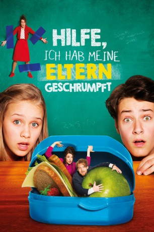

#9238 Hilfe, ich habe meine Eltern geschrumpft
 
 IMDB-Wertung: 5.5 / 10
IMDB-Wertung: 5.5 / 10  Metascore: 0
Metascore: 0 
Für Felix läuft es eigentlich mittlerweile richtig gut am Otto-Leonhard-Gymnasium, wo noch immer der Geist des gleichnamigen Schulgründers herumspukt. Doch zu dem wohlwollenden Gespenst gesellt sich zum Leidwesen der Schüler auch der Geist der garstigen ehemaligen Direktorin Hulda Stechbarth. Und auch zu Hause liegen die Dinge im Argen: Felix' Eltern Peter und Sandra wollen mit ihm nach Dubai ziehen, wo sein Vater ein neues Jobangebot hat. Felix wünscht sich, dass seine Eltern auch mal das tun, was er will, und wie zuvor geht dieser Wunsch prompt in Erfüllung, als Mama und Papa nach einer Begegnung mit der wiederauferstandenen Hulda geschrumpft werden. Fortan muss sich Felix nicht nur um seine winzigen Eltern kümmern, sondern auch erneut die Schule retten, denn Hulda hat die aktuelle Direktorin Dr. Schmitt-Gössenwein gefangengenommen und möchte die ganze Schule in ihre Gewalt bringen.
Jahr: 2018
Dauer: 94 Minuten
FSK: 0
Land: Deutschland Studio: Sony Pictures ReleasingTonspuren:
Untertitel:
Auflösung: 1080p (1920x800) Größe: 4659 MB
Genre: Action, Komödie, Abenteuer
Regisseur: Tim Trageser
Drehbuch: Gerrit Hermans
Soundtrack: Anne Kathrin Dern
Darsteller:
 Andrea Sawatzki als Hulda Stechbarth
Andrea Sawatzki als Hulda Stechbarth Johannes Zeiler als Hausmeister Michalski
Johannes Zeiler als Hausmeister Michalski- Eloi Christ als Robert
- Maximilian Ehrenreich als Chris
- Julia Hartmann als Sandra Vorndran
- Lina Hüesker als Ella Borsig
- Oskar Keymer als Felix Vorndran
 Anja Kling als Dr. Schmitt-Gössenwein
Anja Kling als Dr. Schmitt-Gössenwein- Axel Stein als Peter Vorndran
- Georg Sulzer als Mario Henning
 Otto Waalkes als Geist des Schulgründers Otto Leonhard
Otto Waalkes als Geist des Schulgründers Otto Leonhard- Fynn Zinapold als kritischer Vater
Datei: X:\4-Tetralogie(A-K)\Geschrumpft\Hilfe, ich habe meine Eltern geschrumpft (2018, FSK0, 1920x800).mkv seit 20.07.2018
Festplatte: HD Collection-3(N-Z)-6(A-Z)
 Es gibt insgesamt 7 Filme in der Gruppe '4-Tetralogie(A-K)\Geschrumpft'
Es gibt insgesamt 7 Filme in der Gruppe '4-Tetralogie(A-K)\Geschrumpft'